Actual local app screenshots · Alice and Bob · September 7–8, 2026
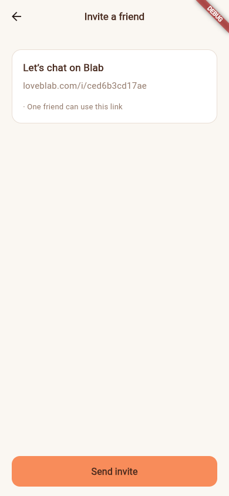
No language choice before sending the invite.
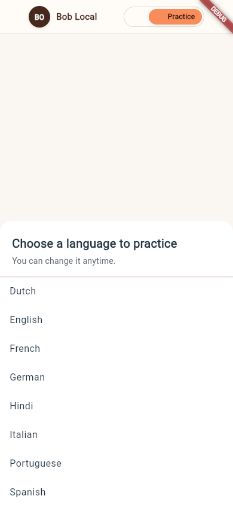
The required language sheet appears after the connection exists.
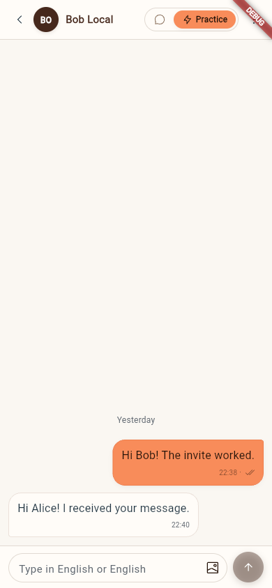
Alice sent a message and received Bob’s reply.
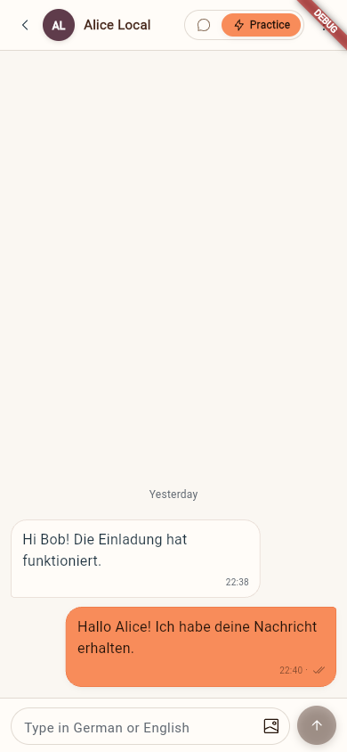
The same conversation appears in Bob’s chosen practice language.
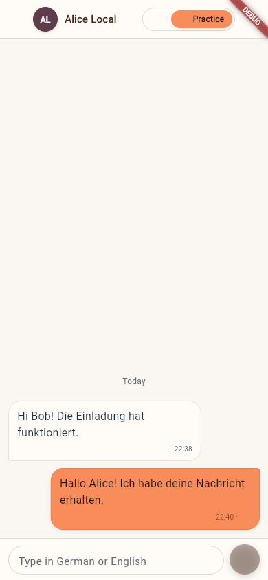
The existing conversation reopened with German preserved.
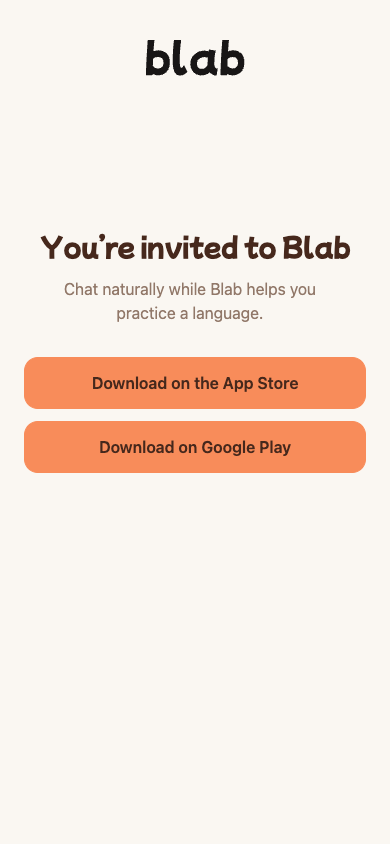
The local browser fallback is generic and does not claim the invite.
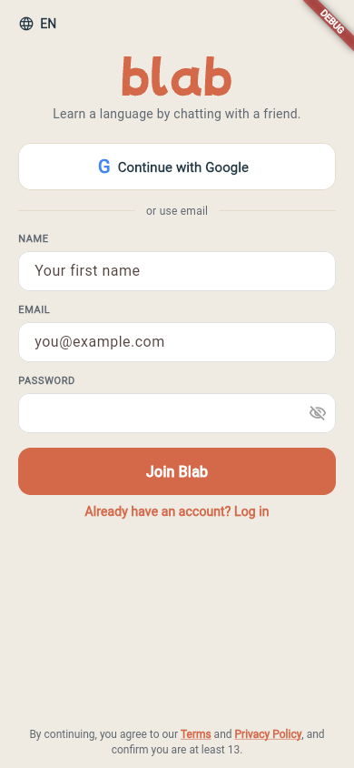
The invite continues through normal signup.
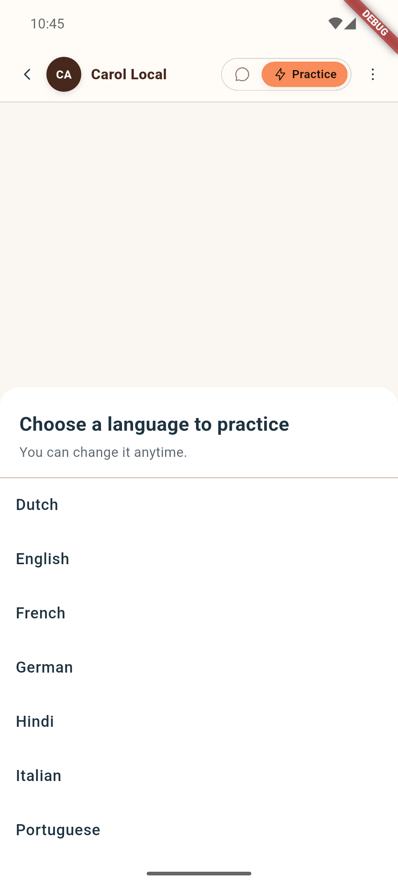
Bob opens Carol’s invite directly in the locally installed app.
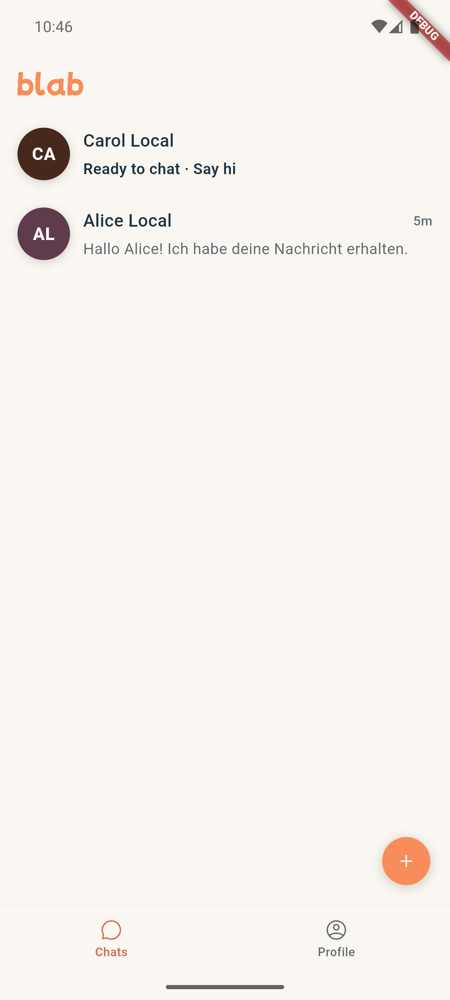
Back leaves the required sheet; the new connection stays ready in Chats.
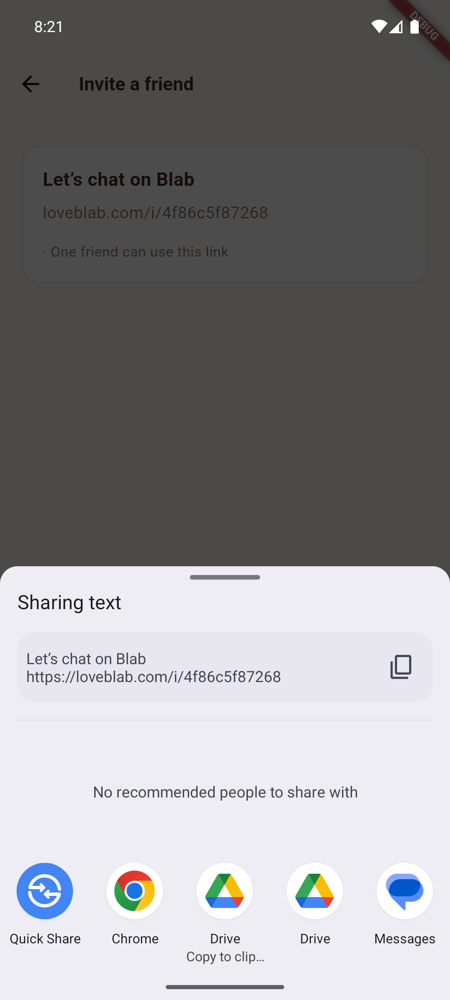
The actual Android share sheet.
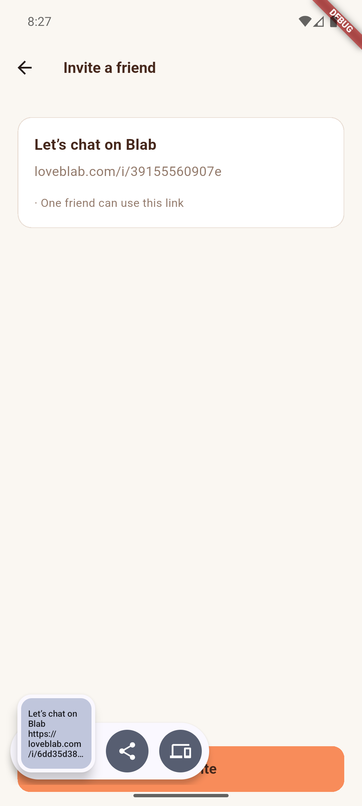
The system confirms Copy and Blab prepares a fresh link.
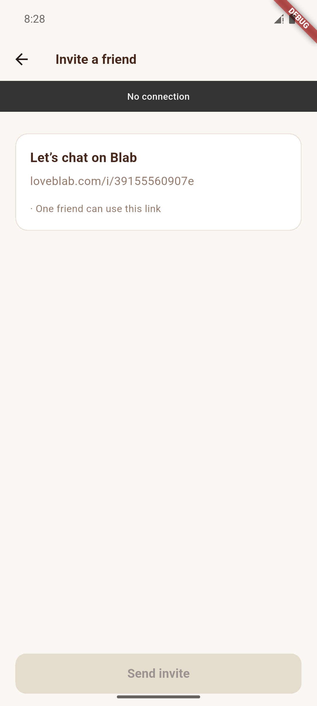
Only the standard connection banner; sending is disabled.
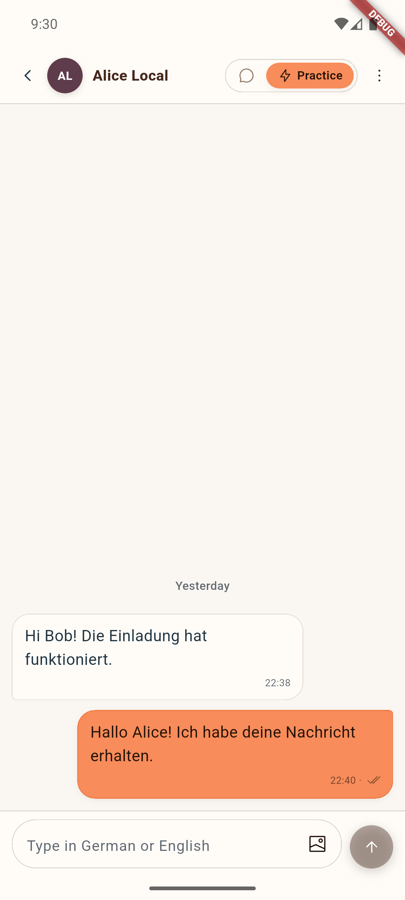
Bob remains signed in on Android, with Alice’s conversation open in German.